This page brings together basic information about the Thai script and its use for the Thai language. It aims to provide a brief, descriptive summary of the modern, printed orthography and typographic features, and to advise how to write Thai using Unicode.
The Thai script is used primarily for writing the Thai language, as well as Northern Thai, Northeastern Thai, Southern Thai, and Thai Song, which are separate languages. It is also used to write a number of minority languages in Thailand, Laos and China, as well as Pali, which is widely used in Buddhist temples and monasteries.s
อักษรไทย
The alphabet was derived from the Old Khmer script, which descended from Pallava. Thai tradition attributes the creation of the script to King Ramkhamhaeng the Great (พ่อขุนรามคำแหงมหาราชpʰo kʰun raːm kʰam ŋɛː ma haː raː tɕʰa) in 1283, though this has been challenged.
Both the Thai language and script are closely related to Lao and its script.
Thai is an abugida. Consonant letters have an inherent vowel sound. Vowel signs are attached to the consonant to produce a different vowel. See the table to the right for a brief overview of features for the modern Thai orthography.
Modern Thai uses 41 basic consonant letters. Each onset consonant is associated with a high, mid, or low class related to tone. Tone is indicated by a combination of the consonant class, the syllable type (live/dead), plus any tone mark.
Thai uses visual placement: only the 8 vowel components that appear above or below the consonant are combining marks; the others are ordinary spacing characters that are typed in the order seen.
This page lists 37 multipart vowels (including diphthongs) made from 12 dedicated vowel characters, and 4 consonants. Multipart vowels can involve up to 4 glyphs (plus a tone mark), and glyphs can surround the base consonant(s) on up to 3 sides.
The glyphs used to represent vowels, whether alone or in multipart vowels, are arranged around a syllable onset, which may be 2 consonants, rather than just around the immediately preceding consonant. For an example of the effect this produces, see prebase and compositeV.
Thai vowels all come in short and long forms, which are phonemically distinctive. A set of diphthongs end in a̯, and most vowels can be followed by either w or j.
Vowel sounds are often written differently when they appear in a closed vs. open syllable. Short vowels in open syllables usually end with a glottal stop.
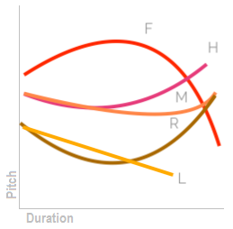
Thai tones. source: Zsiga, The Sounds of Language
The following table provides typical phonological transcriptions and descriptions for the five tones.wl,#Tones
high
á
˦˥
live or dead syllables
ค้า; มัก
mid
a/ā
˧
live syllables only
คา
low
à
˨˩
live or dead syllables
ข่า; หมัก
rising
ǎ
˧˨˧
live syllables only
ขา
falling
â
˥˩
live or dead syllables
ค่า; มาก
Structure
Thai syllables allow the following patterns, where V can be a short or a long vowelc,#Thai.
VVCCVCVCCCVCCVC
The long vs. short vowel distinction is phonemically important. Long vowels are approximately twice the length of short ones. All open syllables have long vowels.wl,#Vowel_developments
Consonant clusters only occur in syllable initial position, with the following permissable combinations:c,#Thai
pʰrpʰl
tʰr
kʰrkʰlkʰw
Syllable-final consonants can be one of the following.c,#Thai Stops are unreleased.
The following table summarises the main vowel to character assigments.
ⓘ represents the inherent vowel. Not listed here are 18 additional diphthongs (shown in the sections below) that are created by adding a -j or -w glide after vowels shown in this table. ◌ indicates the location of a consonant, but does not necessarily indicate a combining mark.
None of these are spacing combining marks. Where a vowel glyph creates horizontal space a letter is used.
Maitaikhu
็U+0E47 THAI CHARACTER MAITAIKHU appears alone, like a vowel character, over a consonant in one word only, with the pronunciation ɔ̂ː.
ก็
It is more often used to convert the vowels produced by the following three vowel signs to short vowels when they are followed by a final consonant (dotted circles represent consonants here).
เ◌eː becomes เ◌็◌e
◌อ◌ɔː becomes ◌็อ◌ɔ,
แ◌ɛː becomes แ◌็◌ɛ (not very common).
Examples:
เด็ก
ซ็อกเก็ต
น้ำแข็ง
It is also used for the diphthong ewเ◌็ว (eːw > ew).
เร็ว
Vowel letters
Dedicated vowel letters
กา
kaːU+0E01 THAI CHARACTER KO KAI + U+0E32 THAI CHARACTER SARA AA
The following vowel-specific characters are ordinary spacing characters, with the general category of 'letter'. They are typed and stored around the base in visual order, and can appear alone or as part of a multipart vowel. The dotted circles indicate the location of the syllable-initial consonant.
เ◌␣โ◌␣แ◌␣◌ะ␣◌า␣ ␣ไ◌␣ใ◌␣◌ำ
Sara AM & nikhahit
ำ [U+0E33 THAI CHARACTER SARA AM] is classed as a vowel, but also contains the final consonant m, represented by a built-in nikhahit.
The separation is not produced by NFD normalisation (see also encoding_nikahit).
Consonants used for vowels
กอ
kɔːU+0E01 KO KA + U+0E2D THAI CHARACTER O ANG
The following are also used to create vowel sounds, either alone or as part of a multipart vowel.
อ␣ย␣ว␣รร
The consonant 0E2D can also be pronounced as the vowel ɔː when it appears alone after a base consonant. It is also used as a vowel carrier for standalone vowels (see standalone).
Many of the multipart vowels involve 0E22 and/or 0E27 to create diphthongs. Mostly, but not always, they represent a semi-vowel.
The consonant 0E23 is pronounced as a vowel a when doubled medially, eg.
ธรรม
When doubled at the end of a syllable it is pronounced an, eg.
กรรไกร
Note, however, that this may also constitute the end and beginning of two syllables, eg.
ภรรยา
Multipart vowels
เกียะ
kia̯ʔU+0E40 SARA E + U+0E01 KO KA + U+0E35 SARA II + U+0E22 YO YAK + U+0E30 SARA A
This page lists 37 multipart vowels (including diphthongs) made from 12 dedicated vowel characters, and 4 consonants. Multipart vowels can involve up to 4 glyphs (plus a tone mark), and glyphs can surround the base consonant(s) on up to 3 sides.
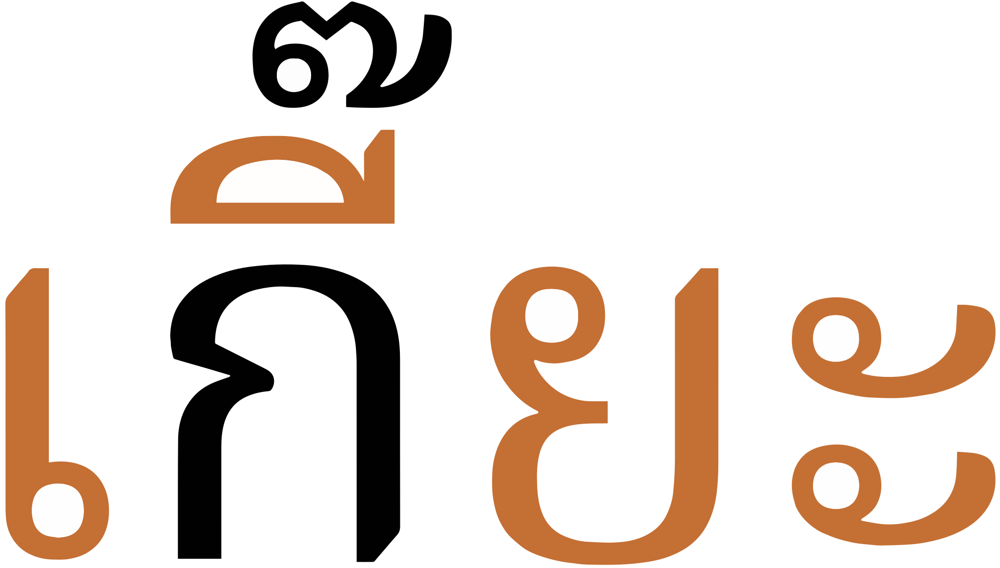
A multipart vowel made up of 4 vowel sign components.show composition
เกี๊ยะ
Some represent plain vowel sounds:
ือ␣เ-ะ␣เ-็␣เ-ิ␣เ-อ␣เ-อะ␣โ-ะ␣็อ␣แ-ะ␣แ-็␣เ-าะ
The other multipart vowels represent diphthongs, which generally end in one of ə̯, i, or w.
For some, the spelling isn't completely obvious.
เ-ีย␣เ-ียะ␣เ-ือ␣เ-ือะ␣ัว␣ัวะ
In many other cases, a semivowel is simply added after one of the vowels seen earlier.
The following list shows where vowel sign glyphs are positioned around a base consonant to produce vowels, and how many instances of that pattern there are. The figure after the + sign represents combinations of Unicode characters,
5 pre-base, eg. โกok̯ (ko)
2 post-base, eg. กาk̯ā
5 superscript, eg. กิk̯i
2 subscript, eg. กุk̯u
1+5 sup+post-base, eg. กือk̯ɯ̄ʔ̯kɯːo
+4 post+post-base, eg. กาวk̯āw̱kaːw
+2 sub+post-base, eg. กุยk̯uy̱kuj
+10 pre+post-base, eg. เกะek̯akè
+3 pre+superscript, eg. เกิek̯ikɤː
+2 super+post+post, eg. กัวะk̯äw̱akua
+2 pre+post+post, eg. เกาะek̯āakɔ̀
+3 pre+sup+post-base, eg. เกือek̯ɯ̄ʔ̯kɯːa
+4 pre+sup+post+post-base, eg. เกียะek̯īy̱akiːa
At maximum, vowel components can occur concurrently on 3 sides of the base.
โก
koːU+0E42 THAI CHARACTER SARA O + U+0E01 THAI CHARACTER KO KAI
Five vowel glyphs appear to the left of the onset consonant(s).
เ␣แ␣ใ␣ไ␣โ
Since Thai uses a visual encoding model, these are not combining marks. They are typed and stored before the base. Click on the following word to see the sequence of characters in storage.
ไข่
These vowel characters are actually placed before the start of the syllable. This means that a word with a consonant cluster at the start separates the pre-base vowel from any post-base vowels by more than one consonant character, eg.
เปล่า
fig_prebase graphically illustrates the arrangement of glyphs for the word program.
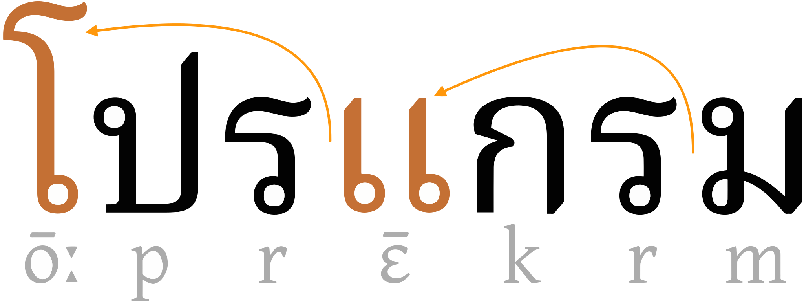
Two pre-base glyphs, rendered 2 characters earlier than their pronounced location due to onset clusters.show composition
In common with other languages, i, ɯ, u, and a vowels have dedicated characters for long and short sounds. But many multipart vowels use 0E30 or 0E47 as shorteners. The following provides one example of the general pattern.
เ◌␣เ◌ะ␣เ◌็◌
This can be seen clearly by comparing the long and short vowels in vowel_mappings.
Nasalisation
The orthography has no special mechanism to indicate vowel nasalisation.
Tones
Each onset consonant is associated with a 'high', 'mid', or 'low' class, which is related to, but not indicative of, tone. (For example, when they appear without tone marks the 'high' class consonants produce a rising tone, and 'mid' or 'low' class consonants both produce a mid tone.)
Tone is also affected by the use of the following combining marks on live syllables, however in 2 cases the result of their use is also context-dependent, due to historical linguistic changes. (For example, ่ [U+0E48 THAI CHARACTER MAI EK] can produce either a low tone or a falling tone, depending on the class of the onset.)
่␣้␣๊␣๋
In the end, tone is indicated by a combination of the consonant class, the syllable type (live/dead), vowel length (for dead syllables), plus any tone mark.
Figure out the tone, depending on the sequence of characters used.
Consonant
Dead?
Tone mark
Tone
high
dead
short
˩˩low
long
˩˩low
live
-
˩˥rising
่
˩˩low
้
˥˩falling
mid
dead
short
˩˩low
long
˩˩low
live
-
˧˧mid
่
˩˩low
้
˥˩falling
๊
˦˥high
๋
˩˥rising
low
dead
short
˦˥high
long
˥˩falling
live
-
˧˧mid
่
˥˩falling
้
˦˥high
Dead syllables
The following table shows the various ways of writing tones in dead syllables. Only 3 tones are available, and no diacritics are used. Vowel length changes the tone after a low register consonant.
consonant
vowel length
high tone
LOW
short
low tone
HIGH
–
MID
–
falling tone
LOW
long
Live syllables
The next table shows the various ways of writing tones in live syllables. All 5 tones are possible.
The expected typing and storage position for tone marks is immediately after the base consonant of the syllable, or after a superscript or subscript vowel mark if there is one.
The tone mark should be typed before ำ [U+0E33 THAI CHARACTER SARA AM], but should be displayed above the nikhahit by the application, eg. ก่ำ
Vowel absence
์
Vowel absence after syllable-final consonants is not normally marked in any way. Nor is it marked in syllable-initial clusters.
์ [U+0E4C THAI CHARACTER THANTHAKHAT]
can be used above a consonant or syllable when it is not pronounced (usually at the end of a syllable).
Click on the words to see the pronunciation more clearly.
รถเมล์ศักดิ์สิทธิ์ It is often used for foreign loan words, eg. คอมพิวเตอร์โปสการ์ดสแตมป์
Vowel sounds mapped to characters
This section maps Thai vowel sounds to common graphemes in the Thai orthography.
The left column shows vowels in open syllables. The right column shows vowels in closed syllables.
Click on a grapheme to find other mentions on this page (links appear at the bottom of the page). Click on the character name to see examples and for detailed descriptions of the character(s) shown.
Whereas the table just above takes you from sounds to letters, the following simply lists the basic consonant letters.
Each of the basic consonants is associated with one of 3 classes (high, mid, and low), that play a part in indicating the tone of the syllable (see tones). In not all cases does this lead to more than one letter for a given consonant.
The pronunciation of a letter often differs when the consonant is the onset or coda of a syllable.
In the following lists, the class of each consonant is shown just below the IPA data. If a dash appears after the IPA transcription, it indicates the pronunciation in syllable-initial position; before indicates the pronunciation for syllable codas.
A silent ห [U+0E2B THAI CHARACTER HO HIP] is added before the characters in the list below to make their default tonal class high.
หม␣หน␣หง␣หว␣หร␣หล␣หย␣หญ
Examples: หมาหยุด
See onsets for further details about how these are presented.
The letter O ANG
อ
อ [U+0E2D THAI CHARACTER O ANG] represents a glottal stop or is silent when used as a base for vowels at the beginning of a syllable (see standalone).
อ่าง
When it appears alone after a base consonant it becomes the vowel ɔː (see otherV).
พอง
It is also used in combination with other characters to produce additional vowel sounds (see compositeV).
Obsolete characters
These consonants are now regarded as obsolete.
ฃ␣ฅ
0E03 is replaced by 0E02.
ฃวา
0E05 is replaced by 0E04.
ฅน
Onsets
Consonant clusters at the start of a syllable are usually one of the following:
Glides
An initial stop may be followed by one of -r, -l, or -w. These sounds can be represented using the normal letters, 0E23, 0E25, and 0E27.
ประฏัก
ปลา
ควาย
There are no dedicated code points for glides when they are used after an initial consonant, so it is feasible that ปลา could be pronounced pà laː in a different context.
The vocalics can also be used after an initial consonant, and again can create ambiguity for pronunciation, eg. compare พฤหัสพฤษภา
Tone markers
The silent 0E2Bis used to affect tonal values (see highclass).
หมา
Similarly, a silent 0E2D is used before an initial 0E22 in 4 words to change the tone of the syllable to low.
อย่าง
Initial s
The word-initial combination 0E17 0E23 is pronounced s.
ทราย
Tone & vowel positioning
Tone marks and/or super-/subscript vowel marks are attached to the second consonant.
เปลี่ยน
กรุงเทพฯ
Pre-base vowel glyphs are placed before the first consonant in the cluster, ie. at the start of the syllable, eg. (where this occurs twice):
โปรแกรม
Finals
Only the phonemes p, t, k, m, n, ŋ occur at the end of a syllable, however many more consonant letters can appear in final position.
The following consonant letters are pronounced differently in syllable-initial and syllable-final positions.
จ␣ช␣ศ␣ษ␣ส␣ร␣ล␣ญ
For example,0E25 in:
ลิง
ตำบล
Consonants at the end of a syllable use ordinary code points, eg.
ตื่น
This can create some ambiguity, since there is no distinction between the sequence in the previous example and one where น is a new syllable with an inherent vowel.
The one exception is the character that is normally regarded as a vowel, 0E33, which includes the final m sound, eg. ห้องน้ำ (A final m is not always represented using sara am) eg. ห้าม
Consonant clusters
Consonant clusters occur syllable-initially, or where one syllable ends with a consonant and the next begins with one.
Thai doesn't have conjuncts, stacking, or special code points for final consonants, etc.
A consonant that appears at both the end of one syllable and the beginning of the next may be expressed with a single character, even if the sounds in each phonetic location differ, eg. สinพิสดาร or ล in จุลทัศน์
Only the following set of consonants behave in this way.
จ␣ช␣ศ␣ษ␣ส␣ล
Consonant length
The Thai orthography has no special features for dealing with geminated or long consonant sounds, however see also folding.
Consonant sounds mapped to characters
This section maps Thai consonant sounds to common graphemes in the Thai orthography.
Rows with 2 columns are high class and low class, respectively.For stop and affricate onsets, rows with a single, centred column are mid class.
Click on a grapheme to find other mentions on this page (links appear at the bottom of the page). Click on the character name to see examples and for detailed descriptions of the character(s) shown.
Stops
p
0E1B
ปลา
b
0E1A
ไบใม้
t
0E15
เต่า
0E0F (rare as onset)
ปะฏัก
d
0E14
เด็ก
0E0E
ชะฎา
k
0E01
ไก่
Aspirated stops
pʰ
0E1A
ผึ้ง
0E1E
พาน
0E20
สำเภา
tʰ
0E16
ถุง
0E10 (rare as onset)
ฐาน
0E17
ทหาร
0E18
ธง
0E12
ผู้เฒ่า
0E11 (rare as onset)
มณโฑ
kʰ
0E02
ไข่
0E04
ควาย
0E06 Used mainly in old words.
ระฆัง
Affricates
t͡ɕ
0E08
จาน
t͡ɕʰ
0E09
ฉิ่ง
0E0A
ช้าง
0E0C Only used in a few words.
เฌอ
Fricatives
f
0E1D
ฝา
0E1F
ฟัน
s
0E28
ศาลา
0E29 Less common. Mostly in foriegn words.
ฤๅษี
0E2A Less common. Mostly in foriegn words.
เสือ
0E17 0E23
ทราย
0E0B
โซ่
h
0E2B
หีบ
0E2E Only used in a few words.
นกฮูก
Nasals
m
0E2B 0E21
ไหม
0E21
ม้า
n
0E2B 0E19
หนู
0E13 Mostly used in coda.
เณร
0E19 Rare as onset.
ŋ
0E2B 0E07
เหงา
0E07
งู
Other
w
0E2B 0E27
แหวน
0E27
ว่าง
r
0E2B 0E23
0E23
เรือ
l
0E2B 0E25
0E25
ลิง
0E2C Now almost obsolete.
จุฬา
j
0E2B 0E22
หยุด
0E2B 0E0D
หญิง
0E22
ยักษ์
0E0D
ประเทศญี่ปุ่น
Vocalics
ri
0E24
อังกฤษ
rɯ
0E24
ฤดู
rɯː
0E24 0E32
ฤๅษี
Final stops
-p
0E1B
ทวีป
0E1A
ดิบ
0E1E
กรุงเทพฯ
0E20
ลาภ
-t
0E16
รถ
0E10
ประเสริฐ
0E2A
โอกาส
0E28
อากาศ
0E29
พิษ
0E15
ชีวิต
0E14
ตลาด
0E0F
ปรากฏ
0E08
ดุจ
0E17
บาท
0E18
โกรธ
0E11
ครุฑ
0E0A
ประโยชน์
0E0E Almost obsolete as a coda.
กฎ
0E12 Almost obsolete as a coda.
-k
0E02
บรมสุข
0E01
หก
0E04
พรรค
0E06
เมฆ
Final nasals
-m
0E21
ยิ้ม
-n
0E23
นคร
0E25
ตำบล
0E2C
ลคุฬ
0E0D Rare as a coda.
บังเอิญ
0E13
คุณ
0E19
อ้วน
-ŋ
0E07
ลิง
Encoding choices
This section offers advice about characters or character sequences to avoid, and what to use instead. It takes into account the relevance of Unicode Normalisation Form D (NFD) and Unicode Normalisation Form C (NFC)..
Although usage is recommended here, content authors may well be unaware of such recommendations. Therefore, applications should look out for the non-recommended approach and treat it the same as the recommended approach wherever possible.
SARA AE
In complex scripts, visually similar or identical glyph patterns can often be made from a sequence of code points rather than the single code point that Unicode provides. These are not made the same by normalisation, and they are not semantically equivalent. These inappropriate sequences should be avoided because they will cause the meaning of the text to change; searches, matching and other aspects of the text will fail to be understood by the application or the font.
Only one such is listed in the table below, The single code point on the left should be used, and not the sequence on the right. In some cases, fonts will indicate that there is a problem by forcing the appearance of a dotted circle or otherwise failing to render the text correctly, but this may not always be the case.
The combination of nikahit and sara aa is normally written with the precomposed character in the Thai block. It is possible to use 2 code points to create something that may visually look identical (and is in fact used during justification), but the single character and the sequence are not converted to each other during normalisation; therefore, the text will be read as different by normalisation-based matching algorithms.
As already mentioned, Thai is visually encoded so pre-base glyphs are associated with ordinary spacing characters, and these need to be typed and stored in visual order relative to the base consonant(s) in a syllable. If the syllable begins with a consonant cluster such as pr, the pre-base code points must be typed before the p, even though they are pronounced after the r.
Tone marks should be typed and stored after any combining vowel mark. Fonts will typically indicate visually that the order is incorrect because the tone mark will appear below the vowel mark if they are the wrong way around.
Numbers, dates, currency, etc.
Thai has a set of decimal digits, that are used regularly.
๐␣๑␣๒␣๓␣๔␣๕␣๖␣๗␣๘␣๙
The CLDR standard-decimal pattern is #,##,##0.###. The standard-percent pattern is #,##,##0%.cldr
Currency
The currency symbol for baht is encoded in the Unicode Thai block.
฿
The CLDR standard format for currency is ¤#,##0.00.cldr
Dates
Thailand commonly uses the Buddhist Era calendar. The Gregorian year 2000 was 2543 in the Buddhist calendar.
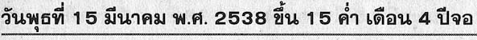
Buddhist era date at the top of a Thai newspaper: 15 March 1995.
In fig_thai_date the abbreviation พ.ศ.p̱ʰ.ś. stands for Buddhist era.
This section brings together information about the following topics:
font/writing styles;
cursive text;
context-based shaping;
context-based positioning;
letterform slopes, weights, & italics;
case & other character transforms.
Modern type styles often omit the loops found in more traditional typefaces. See an article that explores this in depth.
Loopless is considered to be more contemporary and modern, and is mainly used for advertising and titling. The distinction doesn’t necessarily map to that of serif vs sans – Noto, for example, provides both serif and sans Thai font faces, but they both have loops. On the other hand, Neue Frutiger Thai offers traditional (looped) and modern (loopless) alternatives as part of the same font family (each with both regular, italic and bold substyles).
The Silom font uses the traditional looped glyphs.The Sukhumvit Set font uses modern unlooped glyphs.
Context-based shaping & positioning
Thai has no stacking or conjunct behaviour, but the following are a few selected examples of contextual shaping and positioning.
Most of the combining characters in Thai are used for vowel signs and tone marks. Combining characters need to be placed in different positions, according to the visual context. The example below shows the same tone character displayed at different heights, according to what falls beneath it.
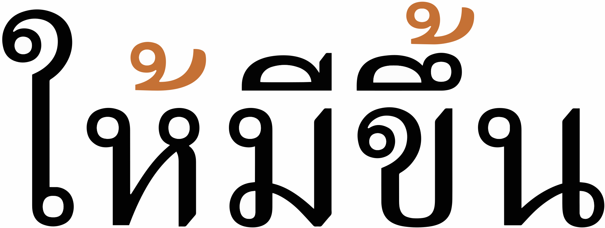
The same tone mark displayed at different heights.
Thai regularly combines multiple combining characters above a base consonant. There are two examples in the text below, both of which show a base character with a vowel sign and then a tone mark on top.
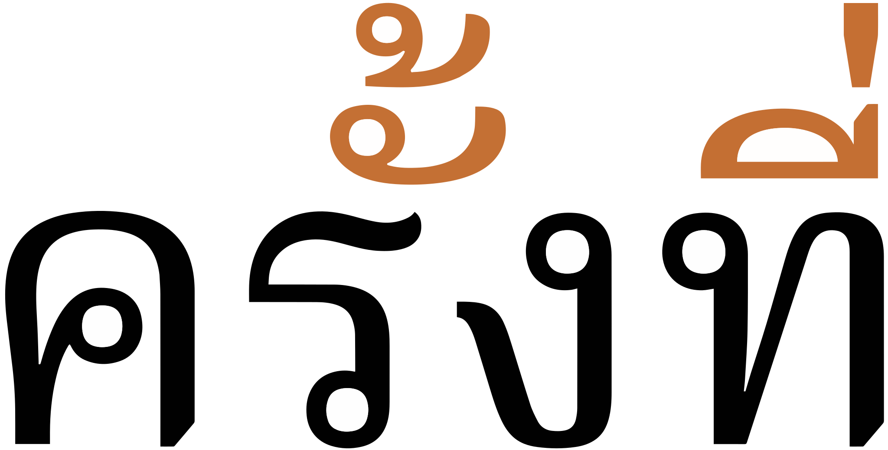
Multiple diacritics (vowel sign + tone mark) attached to the same base character.
Although Thai has very little in the way of shaping, fig_shaping shows a number of small glyph adaptations that occur in some fonts (here, Noto Serif Thai) when certain tall or deep consonant letters have vowel marks attached. The 2 examples on the left show a slight reduction in the downward extent of the consonant glyph; in the middle 2 examples the part of the consonant glyph that lies below the baseline is removed altogether and replaced by the vowel sign; and in the right-most example, the height of the consonant glyph is reduced when a vowel sign appears above it.
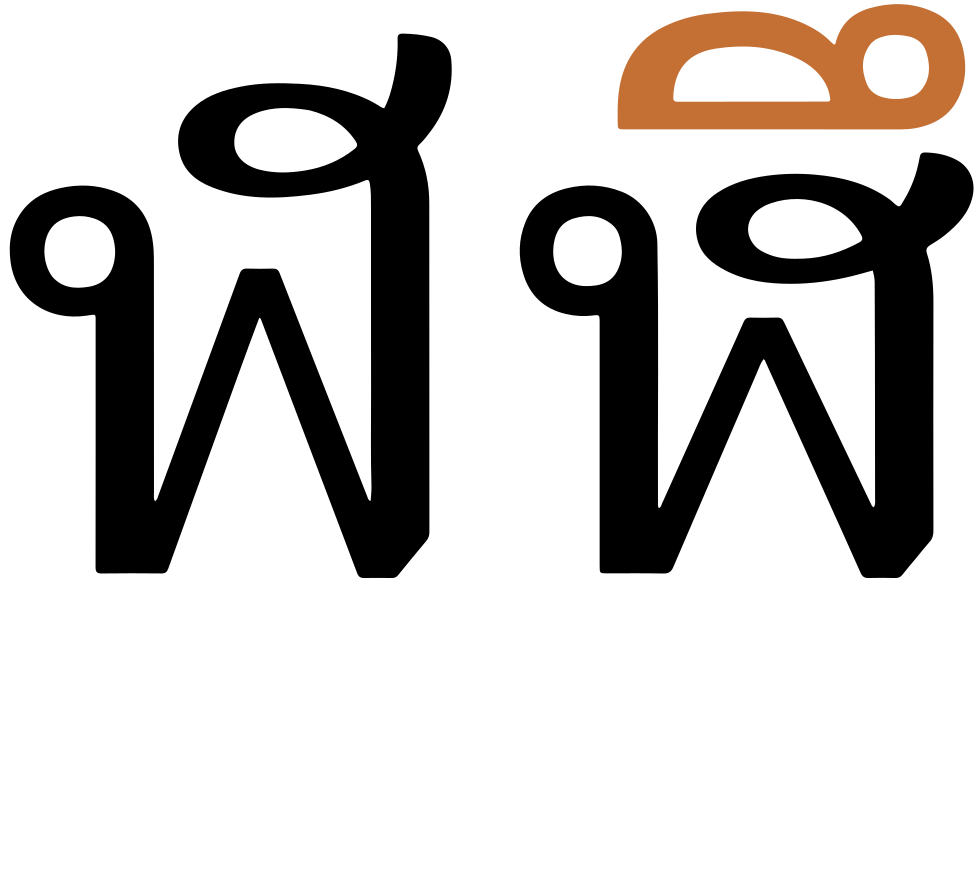
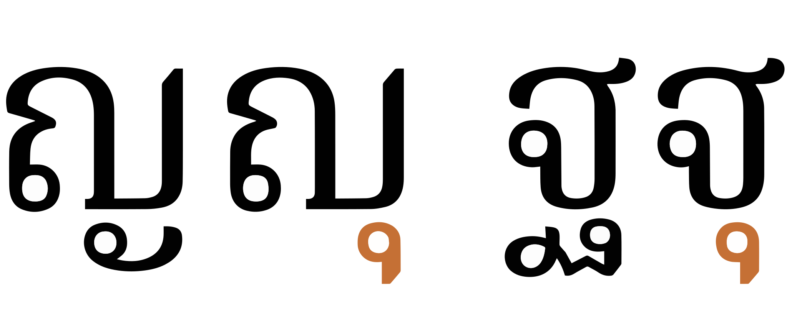
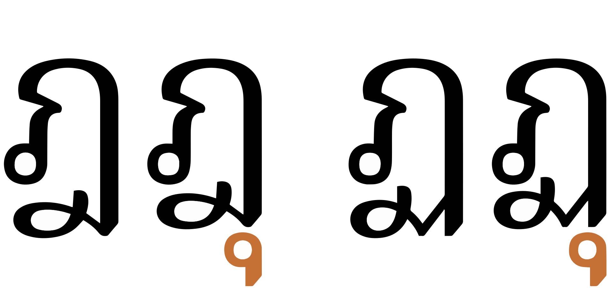
Shaping changes in the Noto Serif Thai font. Each example shows an unadorned consonant glyph on the left, and on the right a shaped version when a vowel sign is attached.
Letterform slopes, weights, & italics
Ben Mitchell describes how italicisation is used for meta text and to convey the ‘about’ voice, rather than for emphasis or names of things (for which bold is used).
Italicisation tends to be applied to whole paragraphs or groups of paragraphs, for such things as picture captions, bylines, and other labels, commentaries, summaries such as standfirsts in magazines or news stories, and signposting. It is also regularly used for direct speech between quote marks.
Observation: Thai newspapers appear to use italic text for captions and by-lines. There is no evidence of the use of inline italicisation, but there is inline bolding.
Graphemes
Non-combining Thai vowel characters are treated as independent grapheme clusters. Only combining characters are grouped together with their base into a cluster.
Grapheme clusters
Base SARA_AM? Combining_mark*
Combining_mark may include zero or more of the following types of character, grouped by labels that correspond to Unicode Indic syllabic category values.
Dependent vowels [9] (see combiningV) Thai has many multipart vowels that are made of combinations of ordinary letter characters and combining marks clustered around a base, but in the modern Thai language only one of these dependent vowels is used per base. (Other languages may use more than one. The letter characters are ordinary spacing characters, that are manually positioned in the text stream.)
Tone marks [4] (see tones) Tone marks should be typed and stored immediately after a dependent vowel, if there is one, and immediately after the base otherwise.
Consonant killer (májtʰantʰákʰâːt) [1] (see novowel) Used after other elements in the grapheme cluster to indicate cancelling of a consonant or syllable.
The spacing letters used for vowel signs are all individual grapheme clusters, with the exception of ำ [U+0E33 THAI CHARACTER SARA AM] (see nikhahit), which has the general category of Letter, but it is treated like a combining mark during segmentation.
The following examples show a variety of grapheme clusters:
Click on the text version of these words to see more detail about the composition.
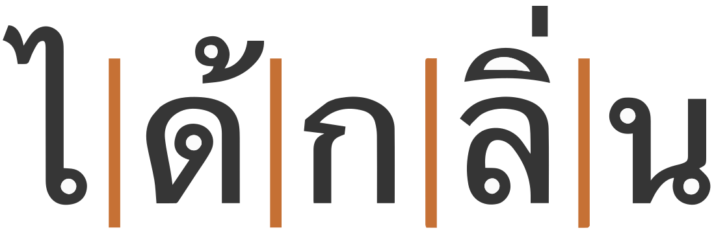
ได้กลิ่น
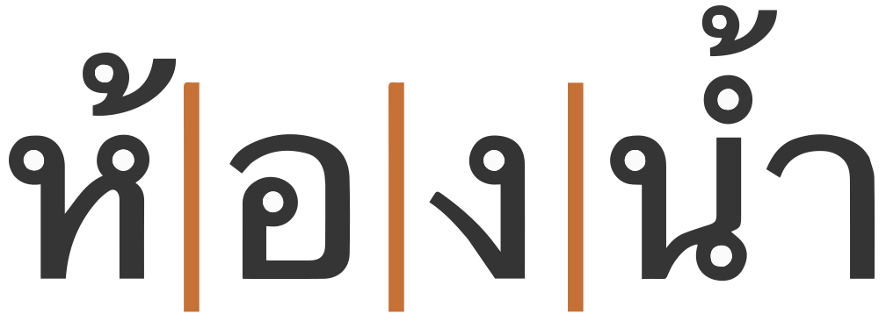
ห้องน้ำ
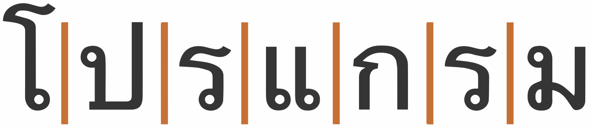
โปรแกรม
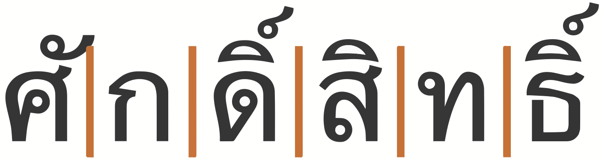
ศักดิ์สิทธิ์
The grapheme cluster boundaries are convenient for justification algorithms, which insert equal amounts of space between non-combining letters, including between non-combining vowel sign components and their consonants (see justification).
Test in your browser.The words test units that equate to grapheme clusters only, and others that include conjuncts. First, the text is displayed in a contenteditable paragraph, then in a textarea. Results are reported for Gecko (Firefox), Blink (Chrome), and WebKit (Safari) on a Mac.
Cursor movement.Move the cursor through the text.
Gecko and WebKit browsers step through the text using grapheme clusters with one exception: they take 2 steps to get through ำ [U+0E33 THAI CHARACTER SARA AM]. Blink steps through all words using standard grapheme clusters. In all cases, the WJ and ZWSP are skipped separately; the cursor doesn't appear to move as the arrow key is pressed for Gecko and Blink browsers, but WebKit pauses halfway through the preceding character when it encounters ZWSP.
Selection.Place the cursor next to a character and hold down shift while pressing an arrow key.
The behaviour is the same as for cursor movement.
Deletion. Forward deletion works in the same way as cursor movement. The backspace key deletes code point by code point, for all browsers.
Line-break.See this test. The CSS sets the value of the line-break property to anywhere. Change the size of the box to slowly move the line break point.
Gecko, WebKit and Blink browsers all wrap on grapheme cluster boundaries.
Punctuation & inline features
Word boundaries
Thai doesn't separate words in a phrase.
Spaces are used in Thai as phrase separators, but Thai doesn't separate words in a phrase using visible spaces.
There is, however, a concept of words in the text. For example, lines are supposed to be broken at word boundaries.
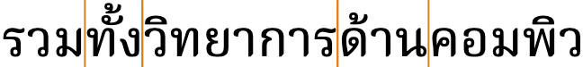
Word boundaries occur where the vertical lines appear, though they are not marked by the script.
Word boundary detection
The main difficulty arises when dealing with compound words. It can often be difficult to decide whether a given string of syllables represents multiple words or a single compound word.
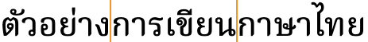
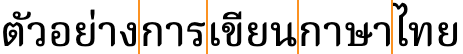
Alternative line break opportunities for Thai text using compound nouns.
The variation may be related to the operation being performed on the text (eg. line breaking in narrow newsprint columns, vs. double-click selection, vs. cursor movement, etc.), or it may just be down to personal preference,
The difference may also be contextually dependent. Wirote Aroonmanakun describes how คนขับรถ should be viewed as a single word in the context คนขับรถนั่งคอยอยู่ในรถ, whereas in the phrase คนขับรถผ่านแยกนี้ไม่มากนัก it would be viewed as 3 words, referring to anyone who is driving.at
Proper names, which are composed from multiple words, are also problematic, especially because there are no capital letters to distinguish them from other pieces of text.g2455,#issuecomment-375162188
ZWSP & WJ
In order to manually fine-tune word-boundary detection, the invisible character [U+200B ZERO WIDTH SPACE] (ZWSP) can be used to create breaks.u,625
To prevent a break between syllables, [U+2060 WORD JOINER] (WJ) can be used.
It is also important to bear in mind that Thai may be used to write various languages, in particular minority languages for which different dictionaries are needed. Since such dictionaries may not available in a given browser or other application, there is a tendency to use ZWSP in order to compensate.
Large-scale manual entry of ZWSP and WJ has potential downsides because the user cannot see them; this leads to problems with ZWSP being inserted in the wrong position, or multiple times. However, these don't set a state, so it doesn't create major issues. It would be useful, however, if an editor showed the location of these characters.
Care should also be taken when trying to match text, eg. for searching in a page. WJ should be ignored. ZWSP may or may not be ignored, depending on whether word boundaries are significant for the search.
Parsing syllables
Automatically adding spaces (zero-width or other) around Thai syllables is problematic because syllable-final consonants are not easy to identify. Thai segmentation may have to deal with ambiguous situations. Take for example the word
ถนน
Because syllable-final sounds are ordinary letters, with no special indication, this could be parsed as ta.non, ton.na, or even ta.na.na, and indeed some words are written the same but pronounced differently, eg.
นม
Similarly, because medial consonants are written with normal characters, there is a possibile ambiguity about whether a sequence contains an inherent vowel, eg.
กรี
Phrase & section boundaries
,␣:␣.␣?␣!␣๚␣๛
Thai uses space as a phrase marker, rather than to delimit words, often in places where English text would use commas or periods. Latin-based punctuation such as comma, period, and colon are also used in text, particularly in conjunction with Latin letters or in formatting numbers, addresses, and so forth.
๚ [U+0E5A THAI CHARACTER ANGKHANKHU] is used to mark the end of a long segment of text. It can be combined as follows to mark a larger segment of text; typically this usage can be seen at the end of a verse in poetry.u,625
๚ะ
๛ [U+0E5B THAI CHARACTER KHOMUT] marks the end of a chapter or document, where it always follows the ๚ะ combination.u,625
Dashes include
‐␣–␣—
Space widths
It is possible to find two different sizes of space in Thai: large spaces between sentences, and small spaces in other places (eg. for separating sub clauses). The width of the small space is the same as ก [U+0E01 THAI CHARACTER KO KAI], and the larger space is double that size.@GitHub,https://github.com/w3c/sealreq/issues/46
Most people no longer make this distinction, but some may want to. It also occurs in other Southeast Asian scripts.
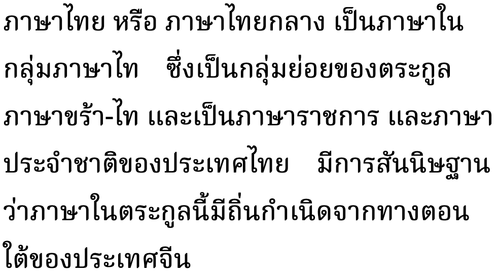
An example of how multiple width spacing may look.
Observation: It is currently not clear how to achieve this on the Web, where multiple space characters are collapsed to a single space by default. One suggestion is to use [U+2003 EM SPACE], but that is not well supported by Thai fonts, and doesn't expand during justification. See @GitHub,https://github.com/w3c/sealreq/issues/46 for a discussion.
Bracketed text
(␣)
Thai commonly uses ASCII parentheses to insert parenthetical information into text.
Thai texts use quotation marks around quotations. Of course, due to keyboard design, quotations may also be surrounded by ASCII double and single quote marks.
ๆ [U+0E46 THAI CHARACTER MAIYAMOK] is used to mark repetition of preceding letters.u,625 It is typically preceded and followed by a space, eg. ทุกวัน ๆ However, some publishers prefer to publish without a leading space,g19,#issuecomment-579378205 ie. ทุกวันๆ
This character shouldn't be wrapped to the beginning of a new line on its own, and should be kept not far from the preceding text that it duplicates during justification.g19,#issuecomment-579378205
Abbreviation
ฯ
ฯ [U+0E2F THAI CHARACTER PAIYANNOI] is used to indicate elision or abbreviation of letters; it is viewed as a kind of letter, however, and is used with considerable frequency because of its appearance in such words as the Thai name for Bangkok,
กรุงเทพฯk̯ṟuŋ̱eṯʰp̱ʰ⋯krūŋ tʰêːp
which is short for
กรุงเทพมหานครk̯ṟuŋ̱eṯʰp̱ʰm̱hāṉḵʰṟkrūŋ tʰêːp mahǎː nákʰɔ̄ːnIt is followed by a space.
Ellipsis
ฯ␣…
Paiyannoi is also used in the combination ฯลฯ to create a construct called paiyanyai , which means “et cetera, and so forth.”u,625
Some abbreviations are written using a full stop, eg. สนง.ตปท.sṉŋ̱.t̯p̯ṯʰ.Office of the Royal Thai Police which is short for สำนักงานตำรวจแห่งชาติsaᵐṉäk̯ŋ̱āṉt̯aᵐṟw̱c̯ɛh¹ŋ̱c̱ʰāt̯i
๎ [U+0E4E THAI CHARACTER YAMAKKAN] is an ancient punctuation mark used to mark clusters, such as in พ๎ราห๎มณp̱ʰ๎ṟāh๎m̱ṇ̱pʰraːmǒn
Line & paragraph layout
Line breaking & hyphenation
Even where Thai doesn't indicate word boundaries, when Thai text is wrapped at the end of a line it should break at word boundaries.
As the width of a browser window changes, the text in fig_thai_wrap should break at the points shown if the browser supports Thai wrapping:
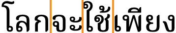
Break points detected in a sequence of Thai characters by an automatic word segmenter.
Because Thai doesn't separate words, applications typically look up word boundaries in a dictionary, however, such lookup doesn't always produce the needed result, especially when dealing with compound words and proper names (see #word). For more details, see wordBoundary.
As in almost all writing systems, certain punctuation characters should not appear at the end or the start of a line. The Unicode line-break properties help applications decide whether a character should appear at the start or end of a line.
The following list gives examples of typical behaviours for characters used in modern Thai. Context may affect the behaviour of some of these and other characters.
Click on the Thai characters to show what they are.
“ ‘ ( should not be the last character on a line
” ’ ) ? ! ๚ ๛ % should not begin a new line
฿ should be kept with any number, even if separated by a space or parenthesis.
The repetition character,
ๆ [U+0E46 THAI CHARACTER MAIYAMOK]
is always preceded by space, however it should not wrap to the next line on its own.@Github,https://github.com/w3c/sealreq/issues/45
Text alignment & justification
Justification in Thai primarily adjusts the blank spaces between phrases, rather than expanding the text between words or syllables. The fact that lines break at word boundaries helps reduce the size of the gaps produced.
Thai may also make certain adjustments to inter-character spacing. The character-based spacing is most common in narrow columns, such as newsprint, where there is no space except at the end of a line.
Any [U+200B ZERO WIDTH SPACE] (ZWSP) is used to separate words is ignored during justification. Justification proceeds as if it wasn't there.u,625
Inter-character spacing
The justification in fig_justification_intercharacter_spacing shows equal spacing across a phrase where there are no space characters to stretch. Note how the equal spacing separates pre-base and post-base vowel sign components from their consonants by the same amount as consonants are separated from each other; they are not kept together with the base consonant they modify.
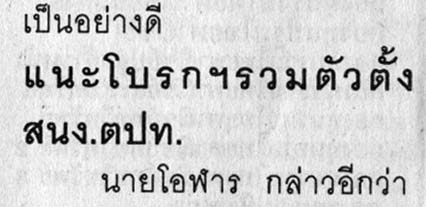
A line with no spaces applies inter-character spacing to justify the text.
This kind of spacing requires a special behaviour for ำ [U+0E33 THAI CHARACTER SARA AM]. The small circle is kept with the preceding consonant, and space is added before the spacing part of the vowel, as shown in fig_am_spacing.
Sara AM before (left) and after (right) inter-character spacing has been applied.
(To facilitate this, applications tend to convert ำ [U+0E33 THAI CHARACTER SARA AM] to the sequence ํา [U+0E4D THAI CHARACTER NIKHAHIT + U+0E32 THAI CHARACTER SARA AA] before stretching. Some care has to also be taken to correctly order the superscript glyphs, since in memory the tone mark precedes the nikhahit. The nikhahit character is not otherwise used for modern Thai.)
Paragraph indentation
Thai does indent the initial line of a paragraph.
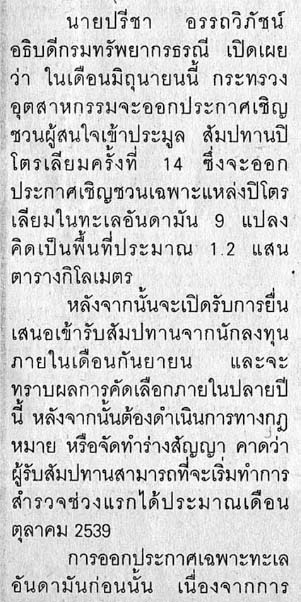
Indentations at paragraph start in a Thai newspaper.
Baselines, line height, etc.
Thai uses the so-called 'alphabetic' baseline, which is the same as for Latin and many other scripts.
Thai places vowel and tone marks above base characters, one above the other, and can also add combining characters below the line. The complexity of these marks means that the vertical resolution needed for clearly readable Thai text is higher than for English, or most Latin text. In addition, Thai tends to adds more interline spacing than Latin text does.
To give an approximate idea, fig_baselines compares Latin and Thai glyphs from Noto fonts. The basic height of Thai letters is typically around the Latin x-height, however extenders and combining marks reach well beyond the Latin ascenders and descenders, creating a need for larger line spacing. In other fonts, the basic height of the Thai letters tends to be between the Latin x-height and cap-height, and the overall height of the Thai line is therefore greater.@GitHub,https://github.com/w3c/sealreq/issues/55#issuecomment-1356183447 See for example the Angsana New and FreesiaUPC font samples below.
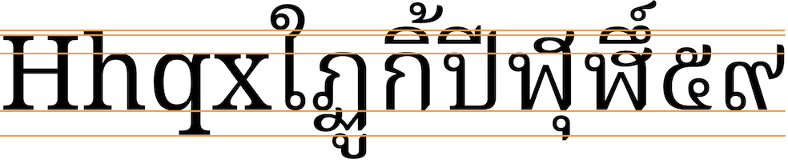
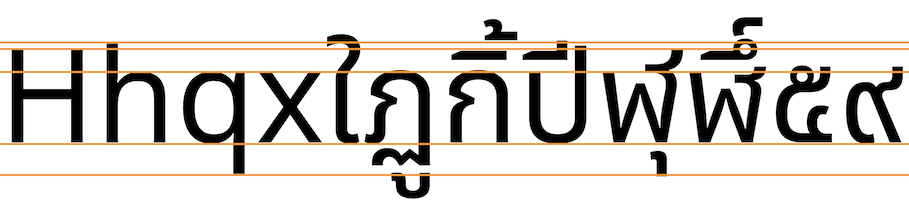
Font metrics for Latin text compared with Thai glyphs in the Noto Serif Thai (top) and Noto Sans Thai (bottom) fonts.
fig_baselines_other shows similar comparisons for the Thonburi and Angsana New fonts.
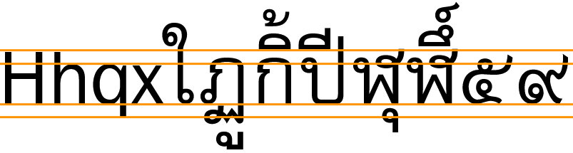
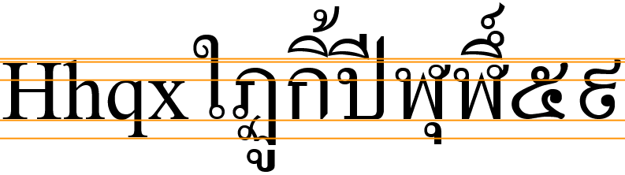
Latin font metrics compared with Thai glyphs in the FreesiaUPC (top) and Angasana New (bottom) fonts.
Counters, lists, etc.
You can experiment with counter styles using the Counter styles converter. Patterns for using these styles in CSS can be found in Ready-made Counter Styles, and we use the names of those patterns here to refer to the various styles.
The modern Thai orthography uses numeric and alphabetic styles.
Bullets
๏ [U+0E4F THAI CHARACTER FONGMAN] is the Thai bullet, which is used to mark items in lists or appears at the beginning of a verse, sentence, paragraph, or other textual segment.u,625
Numeric
The thai numeric style is decimal-based and uses the digits shown below.
๐␣๑␣๒␣๓␣๔␣๕␣๖␣๗␣๘␣๙
Examples:
๑␣๒␣๓␣๔␣๑๑␣๒๒␣๓๓␣๔๔␣๑๑๑␣๒๒๒␣๓๓๓␣๔๔๔
Alphabetic
The thai-alphabetic style uses the letters shown below.
It is possible to find the first letter in a paragraph styled so that it is larger and sits alongside several lines of the continuing paragraph text.
Observation: All combining characters are included in the selections shown in fig_drop_caps.
Any punctuation such as opening quotes and opening parentheses should also be included in the initial styling. ?
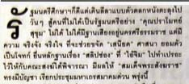
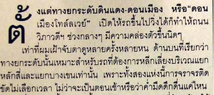
Two example paragraphs showing dropped highlighted initials with combining characters.
Observation: In the figures shown, the alphabetic baseline of the highlighted letter falls slightly below the bottom of the row that determines the size of the highlighted letter. It's not clear whether that's a general trend, or just related to this specific publication.
Observation: In fig_drop_caps_2, the selection picks out only แ from the syllable แฉ.
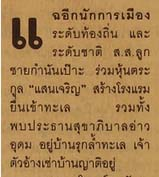
Another example paragraph, showing a pre-base vowel sign alone as a highlighted initial.


 [
[ [
[